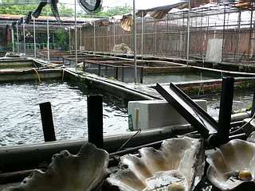

貝殻廟その２/彰化縣福興郷
洞窟を抜けると養殖池が見える。丁度最初に入ったメインの廟の逆サイドになる。

本業である魚の養殖池を横目に眺めながらトタン張りの物置小屋のような建物に入る。
と、いきなり大きな貝殻細工がお出迎え！
先程の貝殻廟のミニチュアである。
実際の貝殻廟は狭苦しく、ディテールが強烈過ぎるのでどうしても近視眼的視野でしか建物を捉えられないのだが、こうして全体像を俯瞰してみると、一応全体的なプロポーションを考えて造っていることがわかる。
でもこんな整った建物だったかな～？
模型とはいえかなり細かいところまで造りこんでいて、廟の建設前（恐らく建設用のマケットだと思う）から相当の気合が入っていたことが伺える。
つまり思いつきで始めたり、完成形が見えないままダラダラと造ったり、といった類の創作姿勢ではない、という事。
これは三秒先の事しか考えてないケースが多いセルフビルド系の建築では非常に珍しいと思う。
さて、目を移せばそこは貝殻細工や貝の即売コーナーとなっていた。
養殖とは別にこの辺でも建設費を抽出しているところが商売上手でニクイ。
…と思ったら店内床上浸水。
チョット良さげな貝細工でもあったら購入したかったのだが、売り物に近づけませんでした…
貝売り場の奥はさらに大洪水。
放っておいても溜池になっているような場所なので排水など望むべくもないのだろう。
厠所に行きたかったんですけどゴム長でも履かなきゃトイレにも行けません。
傍らにはこれから使用されるであろう大量の貝殻がストックされてました。

結局何も買えず、貝売り場を出て養殖池沿いに戻るとまた別の貝殻建築の模型が！
貝殻廟に比べプロポーション自体はかなりマトモ。
…もしかしたらこれからこの建物を造っちゃったりなんかしちゃうんでしょうか？
黄さん！そのバイタリティは一体何処から！？
一度潜ったら二度と戻って来れなさそうな魅惑的な門、網戸やサッシなど無縁な装飾的な窓。
巻貝と二枚貝とサンゴがせめぎあうカルシウム100パーセントの屋根。
これはもしかして黄さんが住む住宅なのでは！
是非、貝殻庵を完成させて欲しいものである。
このあたりで養殖池を中心にぐるっと一回りしてきた塩梅になる。
そろそろ疲れてきたな～、と思った辺りに休憩コーナー。
気が利いてますね。しかも日除けの屋根まで貝尽くし。
隣には先程の貝売り場よりもお店っぽいお土産コーナーが。
でも売ってるモノが写真立てとか空の水槽とか書画とか…買うモノないです。
売店上の貝装飾。
貝の配置はほぼ全部同じである。
売店の反対側にも休憩コーナー。
椅子まで貝殻使わなくても…座ってみたけどエッジがちょっと痛かったよ。
どこから貝殻を集めているのか判らないが多くは食用の貝のものなので水産関係者から仕入れているのかもしれない。
池にはたくさんの魚が養殖されているが、中には爬虫類のみなさんも。
コレも売り物なんだろうか？
黄さんが30年以上かけて作り上げた俺パラダイス。お孫さんだろうか若者２人と角材を削っていた。
黄さん、まだまだヤル気満々である。
その誰も止められない一方通行的爆走人生の原動力となるパッションは何処から沸きあがってくるのだろうか？
でも、判らないでもないんだよなあ～。
毎日同じルーティンワークをコツコツとこなすことで現世の煩わしさから開放される感覚。
そこには単なる建築作業というよりも宗教とか信仰に近い心理的な救いがあるのかもしれない。
実に深～い貝殻パラダイスであった。
でも表の道の水没っぷりもかなり深かったです…
次の珍寺へGO！
台湾大佛列伝3